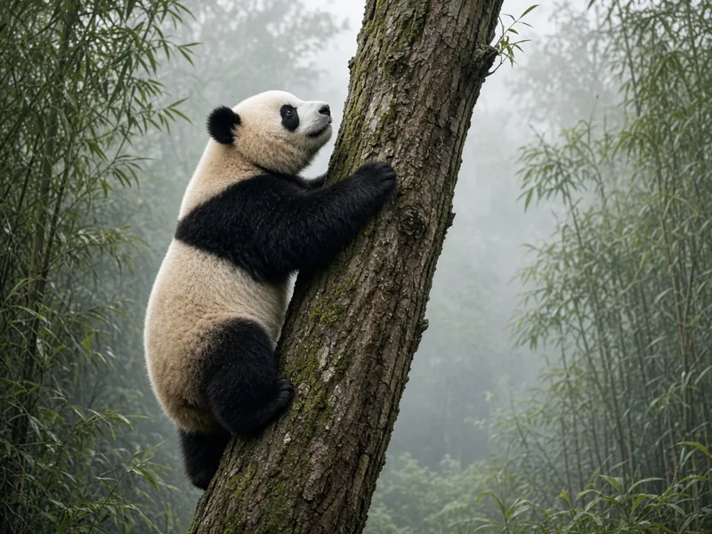

Are giant pandas bears?

Yes, giant pandas are bears. They belong to the bear family, Ursidae, and genetic evidence has settled a debate that once also considered raccoons.
The scientific classification
The Smithsonian's National Zoo and San Diego Zoo both list the giant panda, Ailuropoda melanoleuca, in the order Carnivora and the family Ursidae, the bears.
How the debate was settled
For a long time scientists argued about whether pandas were bears, raccoons or something in their own family. A 1985 Nature paper by O'Brien and colleagues used four independent molecular and genetic measures to reach a consensus. It found that the ancestors of the giant panda split from the bear lineage just before the radiation that led to modern bears.
The IUCN Bear Specialist Group says the panda's membership in the bear family is supported by abundant genetic evidence and is no longer debated. It adds that the panda diverged early within the bear family, roughly 8 million years ago.
Why the confusion happened
The giant panda eats mostly bamboo and has a black and white coat, so it looks unlike other bears. The Bear Specialist Group says traits shared with the red panda likely arose through convergent evolution, because both animals are adapted to a specialized bamboo diet. The red panda is not a bear. It is now considered to be in a family of its own. See our article on whether red pandas are related to giant pandas.
Ways pandas are bear-like
San Diego Zoo says giant pandas resemble other bears in their general looks, the way they walk and climb, skull features, social system and reproductive biology.
A different chromosome count, still a bear
The Bear Specialist Group notes the giant panda has 42 chromosomes versus 74 in ursine bears, but points out that the Andean bear also has fewer chromosomes (52) and is clearly a real bear.
Frequently asked questions
Are giant pandas bears or raccoons?
Bears. They belong to the family Ursidae, according to zoo and IUCN sources, based on genetic evidence.
Are red pandas bears?
No. Red pandas are in their own family and are not closely related to giant pandas.
Why do pandas look different from other bears?
Their bamboo diet and black and white coat set them apart, and some shared features with red pandas arose through convergent evolution.
Do pandas belong to Carnivora?
Yes. Giant pandas belong to the order Carnivora even though they eat mostly bamboo.
Sources
- Smithsonian's National Zoo and Conservation Biology Institute: Giant panda
- San Diego Zoo Wildlife Alliance, Animals and Plants: Giant panda
- IUCN SSC Bear Specialist Group: Giant panda
- O'Brien, S. J., Nash, W. G., Wildt, D. E., Bush, M. E., Benveniste, R. E. (1985). A molecular solution to the riddle of the giant panda's phylogeny. Nature 317: 140 to 144. doi:10.1038/317140a0
Cite this page
APA
PandasWise. (2026, November 11). Are giant pandas bears? https://pandaswise.com/blog/are-giant-pandas-bears.html
MLA
"Are giant pandas bears?" PandasWise, 11 Nov. 2026, https://pandaswise.com/blog/are-giant-pandas-bears.html.
Chicago
PandasWise. "Are giant pandas bears?" PandasWise. November 11, 2026. https://pandaswise.com/blog/are-giant-pandas-bears.html.